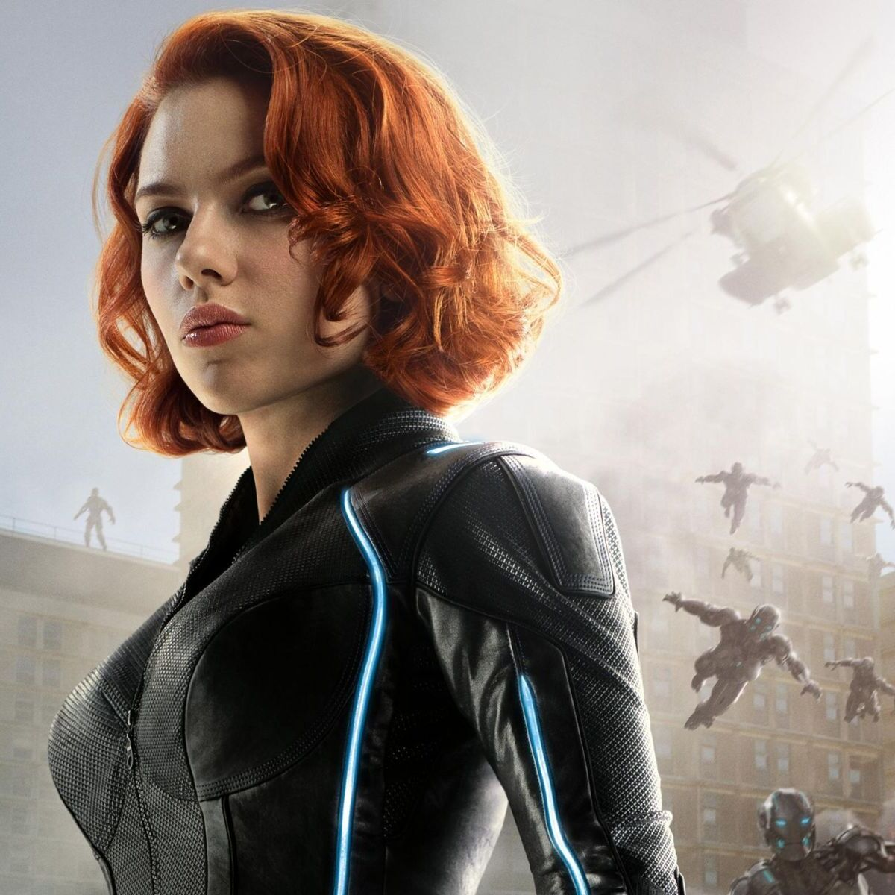
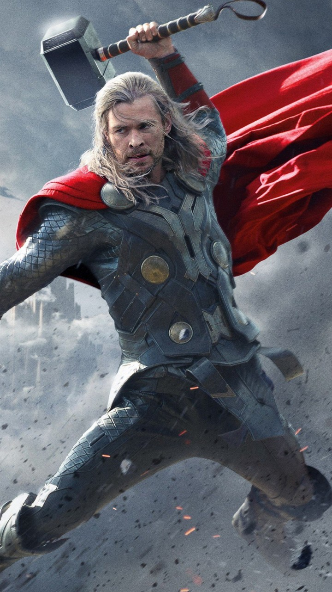
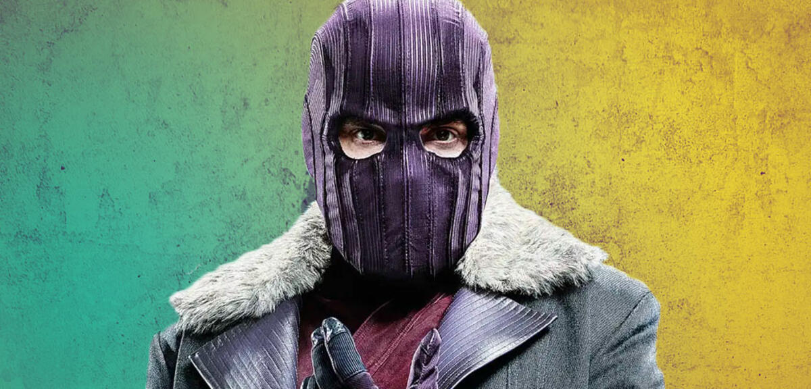
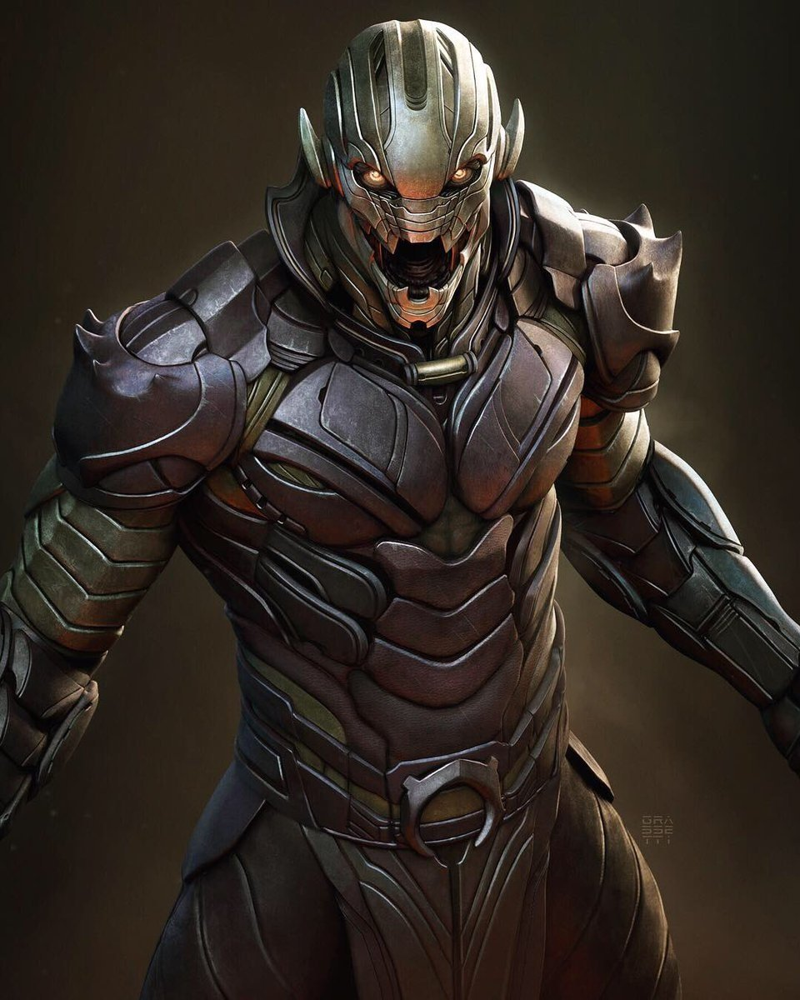
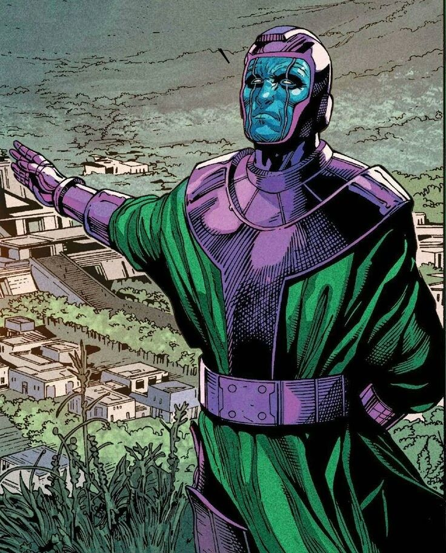
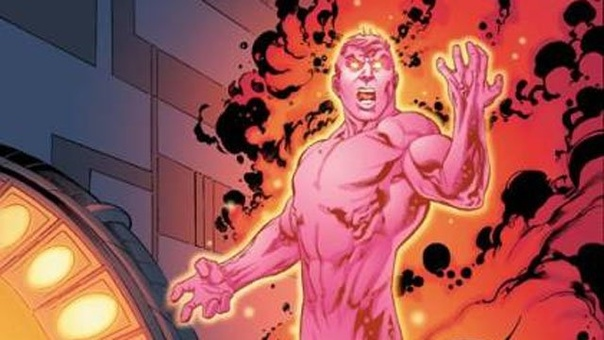
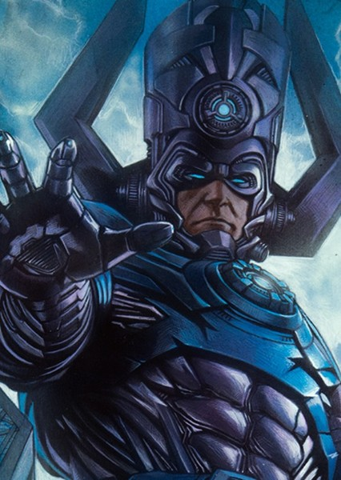
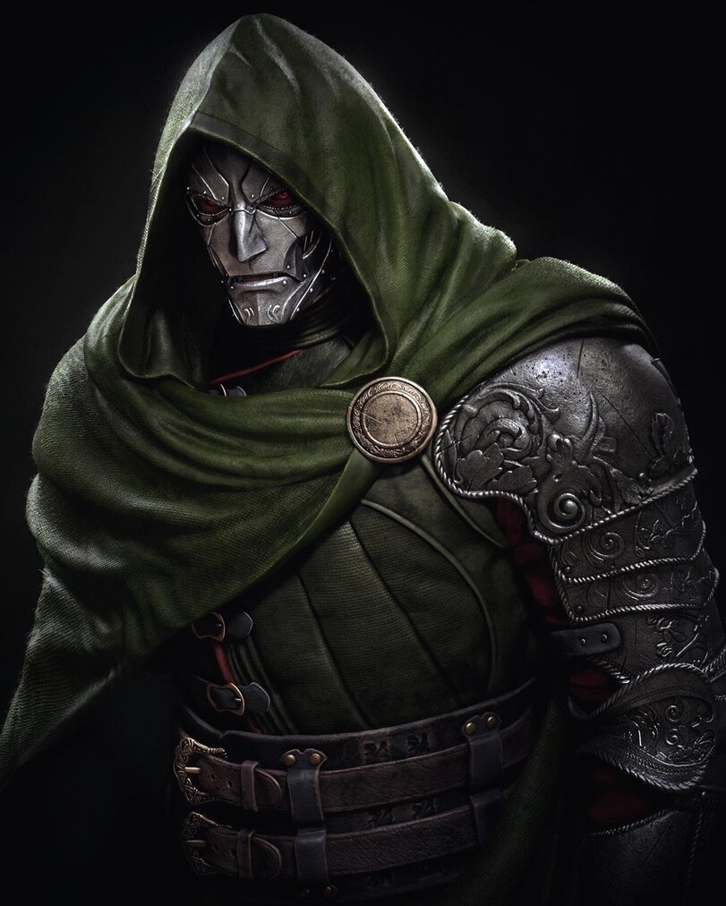
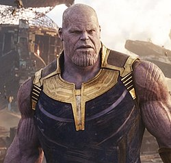

Состав Мстителей

Железный человек
Эксцентричный гений, миллионер, дамский угодник и филантроп Тони Старк также является супергероем в броне, известным как Железный Человек.
Тони Старк – сын богатого промышленника и изобретателя Говарда Старка. Его родители погибли в автокатастрофе, когда Тони был 21 год. Унаследовав компанию отца «Старк Индастриз», он вывел ее в лидеры по производству оружия. Когда Тони Старк приехал в Афганистан, чтобы лично присутствовать на тестовых испытаниях, его отряд подвергся атаке террористов, и раненый шрапнелью миллиардер попал в плен к оружейному барону Вонг-Чу.
Глава террористов обещал оставить Старка в живых, если тот изготовит для него оружие массового поражения. Тони согласился на сделку в надежде выиграть время и получить доступ к необходимым материалам. В работе ему помогал другой пленный учёный, известный азиатский физик и лауреат Нобелевской премии профессор Хо Инсен, чьи работы вдохновляли Старка в колледже.
Вместе они создали боевой костюм с генератором магнитного поля, который защищал сердце раненого Старка. С помощью костюма Тони удалось сбежать из плена, в то время как Хо Инсен пожертвовал собой, выиграв для него время. Вернувшись домой, Тони Старк занялся усовершенствованием костюма и магнитного генератора, от которого полностью зависела его жизнь.
По этическим соображениям Тони прекратил заниматься производством оружия и сосредоточил деятельность компании «Старк Индастриз» на создании новых технологий, которые служат на благо человечества. Он создал множество благотворительных фондов, и, чувствуя все большую ответственность перед миром, решил раскрыть тайну своей личности и признаться, что он и есть Железный Человек.
Тони Старк прекрасно знает себе цену: он одновременно является и спонсором Мстителей, и одним из важнейших участников команды. Он кажется самовлюблённым и постоянно нарушает правила, но он делает это ради достижения своей главной цели – спасения жизни людей.
Созданный Тони Старком высокотехнологичный костюм Железного Человека многократно увеличивает человеческие характеристики. В костюме Железного Человека Тони Старк способен поднимать до 90 тонн, броня защищает его от ножевых и пулевых ранений. Встроенное вооружение костюма состоит из многочисленных пушек, лазеров и ракет, а репульсоры в ботинках и перчатках позволяют Железному Человеку летать. В костюм также встроена встроена операционная система, напоминающая искусственный интеллект, с помощью которого, Тони может связаться со спутниками или штабом Мстителей.
Тони Старк разработал множество моделей своего костюма для разных целей. Так, например, один из них полностью предназначен для стелс-операций, а другой позволяет передвигаться в открытом космосе.
Капитан Америка
Герой вне времени Стив Роджерс борется за свободу в качестве непоколебимого Капитана Америка.
Во время Второй мировой войны юный Стивен Роджерс согласился на участие в сверхсекретной экспериментальной программе по созданию суперсолдат, которая превратила его в непобедимого Капитана Америка – живой символ свободы. Проведя много лет замороженным во льдах, легендарный герой вновь очнулся, чтобы продолжить битву за справедливость.
Стивен Роджерс с детства отличался хрупким телосложением и слабым здоровьем, поэтому его упорные попытки попасть в армию в начале войны не увенчались успехом. Однако они не остались незамеченными, и Роджерс стал участником секретной операции «Возрождение» – проекта по созданию суперсолдат с помощью сыворотки, которая доводит физические способности человека до пика.
Профессор Авраам Эрскин, разработавший сыворотку, увидел в маленьком худом Стиве исключительные качества – отвагу, чувство долга, способность к самопожертвованию, и выбрал его для первого эксперимента. После инъекций сыворотки Стив Роджерс подвергся воздействию вита-лучей, которые активировали и стабилизировали вещество в его организме. Во время эксперимента в лабораторию проник нацистский агент, который убил профессора Эрскина, а вместе с ним и возможность воссоздать формулу сыворотки.
Стив Роджерс стал агентом контрразведки и символом борьбы против нацистской Германии. Он получил красно-бело-синий костюм, созданный по его собственным эскизам, и кодовое имя – Капитан Америка.
Стив и его верные союзники спасли множество жизней, обезвредили немало злодеев и сумели изменить ход войны. Во время своей последней военной миссии Капитан Америка пропал в ледяных водах Северной Атлантики и после долгих безуспешных поисков был объявлен погибшим.
Тело Стива Роджерса было обнаружено во льдах спустя много лет –герой все это время находился в состоянии анабиоза. Капитан Америка чувствует себя потерянным в современном мире, но его сила и лидерские качества помогают ему быть живой легендой, символом чести, доблести и мужества и стоять во главе команды могучих Мстителей.
Сыворотка многократно усилила его физические характеристики и личные качества, наделив Капитана Америка развитым интеллектом, силой, ловкостью и выносливостью. Его единственным оружием стал щит в форме диска, сделанный из сверхпрочного сплава стали и вибраниума. Капитан Америка отличается непоколебимым характером и силой духа.

Черная Вдова
"Первое правило, когда подаешься в бега — не беги, а иди."
Наталья Альяновна "Наташа" Романофф, также известная как Чёрная вдова (англ. Black Widow) была одной из самых лучших шпионок и ассасинов в мире. Изначально работала агенткой КГБ, позже стала членом Щ.И.Т.а, международного контрразведывательного управления. Имеющая огромное мастерство в боевых искусствах и вооруженная миниатюрным электрошоковым устройством, Чёрная вдова стала одной из самых талантливых агенток Щ.И.Т.а. Когда Локи объявил войну Земле, Чёрная вдова присоединилась к команде Мстителей и оказала помощь в обороне Нью-Йорка.
После того, как Мстители победили Локи,она продолжила работать со Щ.И.Т.ом, на этот раз вместе с Капитаном Америка. После Восстания ГИДРЫ, в результате которого всё её сомнительное прошлое было раскрыто миру, она исчезла с радаров, чтобы восстановить своё прикрытие. Позже она вновь присоединилась к Мстителям, уничтожая различные ячейки ГИДРЫ по всему миру, а также враждебного робота Альтрона. В отличие от большинства участников оригинальных Мстителей, Чёрная вдова после Наступления Альтрона осталась членом нового состава команды. Спустя год она принимала участие в поисках Брока Рамлоу, который притворялся агентом Щ.И.Т.а, в Лагосе. После несчастного случае, произошедшего из-за самоподрыва Рамлоу, прибыли Тони Старк и Госсекретарь Таддеус Росс, который объявил им о Заковианском договоре, установленном международным руководящим органом.
Предполагалось, что договор будет контролировать передвижения Мстителей и будет отслеживать участившийся рост нелюдей. Наташа поддержала решение Железного человека в подписании договора. Принимала участие в Гражданской войне Мстителей, сражаясь против Капитана Америка и его команды. Позже помогла Капитану Америка и Зимнему солдату бежать, задержав Чёрную пантеру, которого завербовала. После возвращения на Новую базу Мстителей, она поговорила с Тони, который предупредил, что Т'Чалла сдал её Россу. Ей ничего не оставалось сделать, как уйти, чтобы не отправляться в тюрьму.
Когда Танос приближался к Земле, Романофф, Роджерс и Уилсон защитили Вижена, у которого был камень разума, за которым пришёл Чёрный орден. Позднее они прибыли в Ваканду, чтобы снять камень с Вижена, а также они защитили её, но, к сожалению, Танос без усилий одолел Романофф и других героев, когда он лично пришёл в Ваканду и уничтожил половину всей жизни во Вселенной, когда собрал все камни бесконечности. Романофф - одна из немногих оставшихся в живых.
Через пять лет после щелчка, оставшиеся Мстители принял решение разделится в разные альтернативные временные промежутки, чтобы достать камни бесконечности. Романофф и Клинт Бартон отправились в альтернативный 2014 год на планету Вормир, чтобы добыть камень души. Хранитель камня, объяснил им, что камень можно получить лишь отдав большую жертву. Романофф решила принести себя в жертву, но Бартон этого не хотел, тогда они повисли на горе, и Романофф отпускает руку Бартона и умирает, упав с большой высоты.
Соколиный Глаз
"Короче, город летит в космос, а мы сражаемся с роботами, а у меня лук да стрелы. Послушать, так бред. Никто не сделает за меня мою работу."
Клинтон "Клинт" Фрэнсис Бартон (англ. Clinton "Clint" Francis Barton), более известный как Соколиный глаз (англ. Hawkeye), бывший спецагент Щ.И.Т.а. Нанятый Ником Фьюри для слежения за Тессерактом, Бартон был завербован Локи с помощью Скипетра. Тем не менее, во время нападения на Хеликэрриер, благодаря Чёрной вдове, он был освобождён от контроля Локи и присоединился ко Мстителям в борьбе с армией пришельцев Локи в Битве за Нью-Йорк, которая завершила Вторжение читаури.
Позже он продолжил работать на Щ.И.Т., до его краха, после которого он вместе со Мстителями работал над уничтожением остатков ГИДРЫ, а также зловещим искусственным интеллектом Альтроном. После Наступления Альтрона Бартон решил покинуть Мстителей и вернулся к своей жене и детям. Тем не менее, вскоре он был завербован Капитаном Америкой, чтобы помочь ему в его битве против Заковианского договора.
В результате, Бартон на короткое время был заключён в Рафте, но вскоре был тайно освобождён Роджерсом. Таддеус Росс совершил сделку с его близкими, и он временно находился на домашнем аресте.
Во время щелчка вся семья Бартона рассыпается в пыль. Тогда он решает стать охотником на криминальные организации, убивая всех её членов. Бартон стал себя именовать Ронином (англ. Ronin). Однажды он убивает главу банды Акихико и всех её участников. Тогда к нему приходит Чёрная вдова и говорит ему, что есть шанс вернуть его близких. Бартон присоединяется ко Мстителям и отправляется в 2014 год на Вормир с Романофф.
Он решает пожертвовать собой, чтобы получить камень души, но это делает Романофф, а Клинт получает камень. Вернувшись на базу, Бартон один из тех, кто участвовал в масштабной битве против Таноса и его армии.
Когда Тони Старк жертвует собой, чтобы убить Таноса, Бартон приходит на похороны Старка, а после разговаривает с Алой ведьмой о том, что Романофф знает, что они выиграли.
"Ведь ты знаешь, что я творил. Понимаешь кем я стал. Ни когда не судила о людях по их ошибкам. Может стоило? Ты не судил." ― Соколиный глаз и Чёрная вдова

Тор
"Пора стать тем, кто я есть, а не кем мне положено быть."
Тор Одинсон (англ. Thor Odinson) - нынешний король и бывший принц Асгарда, член команды Мстителей и Бог Грома. Когда его безответственные действия повлекли за собой угрозу его родному миру, Тор был лишен своих сил и изгнан на Землю своим отцом Одином, царем Асгарда. Будучи в изгнании, Тор научился смирению, влюбился в доктора Джейн Фостер и спас своих новых друзей от разрушительной угрозы, посланной его завистливым сводным братом Локи, мечтающим захватить трон Асгарда. Тор смог остановить Локи, в результате чего был прощен Одином и получил свою силу назад.
Спустя год Тору пришлось вернуться на Землю, чтобы вновь помешать планам Локи, который, потерпев поражение в попытке захватить Асгард, собирался поработить Землю с помощью инопланетной расы Читаури. Тор присоединился к команде Мстителей и, в результате продолжительной битвы, они одержали победу над Локи и читаури. После спасения Земли Тор вернулся в Асгард и помог Асгардским армиям с восстановлением спокойствия в Девяти мирах. Затем, Тор, с помощью своих союзников из Асгарда и с Земли, остановил угрозу в лице Тёмных эльфов, древней расы, стремящейся погрузить все миры в состояние тьмы с помощью Эфира.
Во время своего пребывания на Земле, Тор помогал Мстителям, когда они сражались с ГИДРОЙ. После победы над ГИДРОЙ команда стала останавливать Альтрона, создание Тони Старка. После падения Альтрона Тор, увидев видения Алой ведьмы о том, что Асгард падёт из-за него, возвращается на родину, а потом начинает искать Камни бесконечности. Во время отсутствия Тора Асгардом правил Локи. Позже Тор и Локи будут искать Одина, так как без него в Асгарде творятся одни проблемы.
Тор вместе с братом стал искать своего отца на Земле. Тор решил обратиться за помощью к Доктору Стрэнджу и к Мастерам мистических искусств. Однако, Доктор Стрэндж не является вовремя, и Тор не успевает спасти Одина от смерти, и тогда Тор с Локи встречают Хелу, богиню смерти, первого ребёнка Одина и свою сестру. Хела одной рукой ловит, а потом ломает Мьёльнир и отправляет их на Сакаар, где он участвует в Битвы чемпионов, против своего коллеги Халка и они сбегают с Сакаара с Валькирией. Тор сражается с Хелой, и из-за Рагнарёка , Асгард разрушается и новый король выводит Асгардцев, из Асгарда на Землю.
По пути на Землю на них напал Танос и Чёрный орден на корабле Святилище II. Тора чуть не убил Танос, но Локи показал Таносу Тессеракт, который он взял до разрушения Асгарда. После на Таноса напал Халк, но это не помогает. Хеймдалль решает отправить Халка на Землю, чтобы он предупредил людей и из-за этого он лишается жизни. После Локи попытался убить Таноса, но Танос душит Локи. После прилетают Стражи Галактики и они вытаскивают его из открытого космоса. С Енотом Ракетой и Грутом, Тор отправляется в Нидавеллир. С помощью гномом Эйтри, Тор создаёт новое оружие Громсекира, и с Ракетой и Грутом телепортируется в Ваканду и сражается со Мстителями против аутрайдеров. Когда Танос собрал камни бесконечности, Тор напал на Таноса и кинул Громсекиру в живот. Но Танос сказал ему, что надо был кидать в голову и щёлкнул пальцами. Тор один из тех кто остался живым из половины Вселенной. Через три недели, Тор со Мстителями отправился на Титан II, где он отрубил Таносу голову, убив его.
Через пять лет после щелчка, Тор стал королём нового Асгарда. Тогда к нему прилетают Халк и Енот Ракета, чтобы он помог Мстителям. Тор с Енотом Ракетой отправляется в 2013 год в альтернативный Асгард. Пока Ракета крал камень реальности, Тор разговаривал с альтернативной Фриггой. Когда они вернулись обратно, произошла масштабная битва, в которой Тор принял участие. Когда Тони Старк жертвует собой, чтобы убить альтернативного Таноса, Тор приходит на похороны Старка, а после становится членом Стражей Галактики.
Халк
"Столько лет я держал Халка за какого-то паразита досадный довесок...а потом научился видеть в нём пользу. Полтора года экспериментов, попыток спайки силы и мозгов. И вот он результат. Взял лучшее от обоих.".
Доктор Роберт Брюс Беннер (возможны варианты Бэннер и Баннер) (англ. Robert Bruce Banner) - признанный ученый в области биохимии, ядерной физики и гамма-излучений. Брюс пытался воссоздать Сыворотку Суперсолдата, которая была введена Стиву Роджерсу во время Второй мировой войны и сделала его супергероем Капитаном Америкой. Но опыт окончился неудачей, вместо вита-лучей, воздействию которых подвергся Стив Роджерс, Беннер использовал гамма-лучи, и в итоге он оказался в состоянии огромного существа со сверхчеловеческой силой и зеленой неразрушимой кожей, известного как Халк (англ. Hulk).
Опасаясь того, какой ущерб может нанести Халк, Беннер решил вести осторожный образ жизни в отдалённых частях мира, работая врачом, чтобы помогать больным людям, при этом избегая тех, кто мог бы воспользоваться его способностью превращения в огромную зелёную угрозу.
Когда угроза мирового масштаба требовала научного вмешательства Беннера, директор Щ.И.Т.а Ник Фьюри нанял его, зная, что невероятная сила альтер-эго Беннера будет дополнительным активом для Мстителей. После расхождения Мстителей он стал близким другом Тони Старка, а также получил свободу жить в мире, не опасаясь, что на него будут охотиться.
После Восстания ГИДРЫ Мстители собрались вновь, чтобы сразиться с организацией. Для того, чтобы Земля была в безопасности и больше не нуждалась в Мстителях, Беннер помог Старку в создании Альтрона, искусственного интеллекта. Создание быстро восстало против создателей, пытаясь вызвать вымирание человечества. Халк помог в битве с Альтроном и решил исчезнуть с радаров, после того как команда победила его. После Халк улетает с Земли и случайно попадает на Сакаар.
На Сакааре Халк становится одним из гладиаторов Грандмастера и он почитаемый, как любимый чемпион. Когда Тор прибыл на Сакаар, Халк стал сражаться против своего коллеги на арене. После битвы Халк помогает Отомстителям сбежать с планеты. Халк прибывает в Асгард, чтобы уничтожить Хелу. Рагнарёк уничтожил Асгард, Халк присоединяется к спасённым Асгардцем, под правлением нового короля, Тор говорит, чтобы они летели на Землю.
На их пути встретился корабль Святилище II, который подбил Statesman. Чёрный орден убил множество асгардцев. Халк напал на Таноса, который смог одолеть Халка, Хеймдалль отправил его на Землю и он попал в Санктум Санкторум. Он объясняет Тони Старку, Доктору Стрэнджу и Вонгу о Таносе, но тут прилетает Чёрный орден и он убегает, так как не может превратиться в Халка. Позже он вновь встречается с Мстителями и отправляется в Ваканду и принимает участвие в битве за Ваканду в броне Халкбастер. Когда Танос собрал все камни бесконечности, он щёлкнул пальцами и погибла половина Вселенной. Брюс Беннер - один из тех, кто не погиб.
Спустя пять лет после щелчка, Беннер решает слиться с Халком, чтобы стать одним целым с ним, став уникальным видом для Земли. Затем Брюс Беннер и Мстители находят способ исправить децимацию. Беннер отправляется в альтернативный 2012 год, чтобы добыть камень времени. Он приходит в Санктум Санкторум к Древней и просит её отдать камень, по-началу она не хотела этого отдавать, однако всё же решилась на это. Когда Мстители возвращаются, Беннер надевает нано-перчатку со всеми камнями бесконечности и щёлкает пальцами, воскресив половину погибшей Вселенной. Потом Халк присоединяется к масштабной битве против Таноса и его армией. Когда Тони Старк жертвует собой, Беннер приходит на его похороны, а потом отправляет Капитана Америку в прошлое. Вернувшись в форму как Беннер, Брюс связался с Вонгом и Кэрол Денверс, чтобы обсудить десять колец, где Беннер познакомился с Шан-Чи и Кэти Чен. Однако их встреча прошла быстро, так как Денверс моментально отключилась, а Беннер пожелал удачи Шан-Чи и Чен на "новой работе".

Главные Злодеи Марвел

Барон Земо
Барон Гельмут Земо (англ. Helmut Zemo) - бывший полковник и гражданин Заковии и террорист, который хотел отомстить Мстителям после потери семьи во время Битвы за Заковию, ставший одержимым их поражением и уничтожением. Он составил свой план раскола Мстителей, согласно которому, первым делом он подставил Зимнего солдата в убийстве Т'Чаки, что вынудило Капитана Америку защищать своего друга от остального мира. Это привело к Гражданской войне Мстителей, во время которой Железный человек вёл охоту на Зимнего солдата, Земо также раскрыл Старку правду о том, что именно Зимний солдат убил его родителей. Когда Мстители оказались раздробленными, Земо попытался совершить самоубийство, но был остановлен Чёрной пантерой, и был передан под стражу Эверетта Росса.
В 2024 году, Земо освобождают Сэм Уилсон и Баки Барнс, которые наняли его для нахождения Пауэр Брокера и избавления от новой сыворотки Суперсолдата. Тогда они, вместе с Шэрон Картер, стали противостоять Флаг-разрушителям и остальным своим врагам. Когда Дора Милаж прибыли за Земо, он втайне от всех сбежал в Заковию, где смотрел на Заковианский памятник. Однако Барнс и Дора Милаж успешно находят его, после чего Дора Милаж забирает его и отправляет в Рафт. Хоть Земо был вновь арестован, его цель по уничтожению Флаг-разрушителей была успешно выполнена его дворецким, Уилсоном и Барнсом.

Аннигилус
Аннигилус (англ. Annihilus) — вымышленный суперзлодей издательства Marvel Comics, наиболее известен как враг Фантастической четвёрки. Его первое появление состоялось в Fantastic Four Annual #6 (Ноябрь 1968). Аннигилус был создан сценаристом Стэном Ли и художником Стивом Дитко. Он был ответственен за события, произошедшие в Аннигиляции.
Аннигилус является правителем Негативной Зоны. Впервые он столкнулся с Фантастической четвёркой, когда Рид Ричардс обнаружил портал между Негативной Зоной и Землёй. На протяжении многих лет Аннигилус сталкивался с Фантастической четвёркой, которая предотвращала его земные завоевания. Также он нередко выступал против Бластаара, однако иногда они становились союзниками.
Впоследствии он привёл огромный флот из Негативной Зоны, проводя Волну Аннигиляции, с помощью которой он уничтожил и покорил множество планет. Армада противостояла таким космическим существам, как Звёздный Лорд, Дракс Разрушитель и Серебряный Сёрфер. В конечном итоге она была остановлена Галактусом, а сам Аннигилус пал от руки Пожирателя Миров. Тем не менее, он переродился в облике младенца.

Канг Завоеватель
Канг Завоеватель (англ. Kang the Conqueror) - вариант Того, кто остаётся и опаснейший путешественник во времени. Его основной целью стал захват всех реальностей по всей мультивселенной, что и оправдывало его звание завоевателя, из-за чего произошла мультивселеннская война. Как только священная хронология была разрушена. В одной из новых реальностей он стал основателем и лидером Управления временными изменениями.
Канг Завоеватель является одной из множеств вариаций того, кто остаётся, который узнал о параллельных реальностях и познакомился с множеством вариаций самого себя. Однако от множества других своих версий, Канг видел в параллельных реальностях только то, что он мог их захватить. Из-за его похождений началась мультивселенская война между множеством вариантов Того, кто остаётся. Однако настоящий Тот, кто остаётся сумел найти и приручить Алиота - существо, созданное из слёз реальностей, которое сумело одолеть всех его вариантов, включая и Канга Завоевателя. В итоге Тот, кто остаётся создал священную хронологию, которая предотвращала создание параллельных реальностей, из-за чего Канг Завоеватель, как и другие варианты находились у него в плену.
Когда Локи и Сильвия Лафейдоттир пришли к Тому, кто остаётся, чтобы отомстить ему за все свои мучения, Сильвия убила его, из-за чего создалось множество альтернативных веток в мультивселенной, которые УВИ уже не могли остановить. Тогда смог освободиться и Канг Завовеватель. Первым же делом Канг решил стать руководителем УВИ, создавая тем самым ещё одну реальность. Позже в альтернативном УВИ находилась статуя Канга Завоевателя, как "создателя" УВИ, вместо статуй с хранителями времени.

Корвак
Майкл Корвак (англ. Michael Korvac)(часто называемый Корвак или The Enemy) является вымышленным персонажем, который появляется появляется в комиксах, издаваемые Marvel Comics. Персонаж сначала появляется в комиксе Giant-Size Defenders №3 (январь 1975 года) и был создан Стивомом Гербером и Джимом Старлином.
Корвак был изначально нормальным человеком, пока Badoon не ампутировал его половину тела до пояса и прикрепил его верхнюю часть тела и нервную систему на специализированный компьютерный модуль, способный к перекачиванию энергии из фактически любого источника. Механический модуль Корвак может коснуться и синтезировать любую форму энергии и скрытых, современное оружие.
После загрузки информации из корабля Галактуса и приобретения мощность космической силы, Корвак способен к энергетическому проектированию; изменению материи; телепортация и манипуляция временем и пространством. В своей прекрасной человеческой форме Корвак сохранил все его космические способности и мог использовать их, чтобы достигнуть фактически любого эффекта.
Майкл Корвэк - также блестящий программист; основной стратег и огромная рукопашная воюющая сторона.

Галактус
Галактус — единственный выживший из обитателей вселенной, которая существовала до нынешней. Изначально, Галактус был гуманоидом по имени Галан. Он родился на планете Таа, в мире, подобном раю, где процветала самая технологически развитая цивилизация.
Однако эта вселенная находилась на заключительной стадии коллапса. Первоначально, как и все вселенные в Мультивселенной, она была "Космическим яйцом", то есть основной сферой неорганизованной, плотной, компактной, первородной материи. Сфера подверглась "Большому взрыву", который вышвырнул материю за её пределы; большая часть высвобожденной материи в конце концов сформировалась в звезды и планеты. Эта вселенная увеличивалась в размерах в течение миллиардов лет, а затем уменьшилась, подвергнувшись «хрусту», в течение последующих миллиардов лет. Вся материя этой вселенной направилась к центральной точке, где сформировалось новое "Космическое яйцо".
Цивилизация Таа была последней из существующих. Смертельная радиация, вызванная "Большим хрустом", уничтожила всю жизнь во вселенной. Галан, космический исследователь, был отправлен в космическое путешествие на поиски средств спасения Таа, но ничего не нашел. Радиация в итоге убила всех, кроме крошечной части населения Таа. Зная о неизбежной смерти, Галан предложил оставшимся в живых умереть достойно и величественно, отправив один из их кораблей прямо в сердце "Космического яйца". Поскольку космический корабль, в котором находились Галан и его товарищи, приближался к центру "Большого хруста", тепло и радиация убили всех, кроме Галана, который невероятным образом наполнился новой энергией.

Доктор Дум
Виктор фон Дум (англ. Victor von Doom), известный так же как Доктор Дум (англ. Doctor Doom), — заклятый враг команды супергероев Фантастической четвёрки. Сын цыганской ведьмы, Дум является одним из величайших злодеев и лидером вымышленной нации Латверии. Он одновременно учёный и волшебник, был как злодеем, так и героем. Хотя главным противником Дума была Фантастическая четвёрка, он часто сражался также и против Человека-паука, Доктора Стрэнджа, Мстителей, Людей Икс, Карателя, Блэйда, Железного человека, Серебряного серфера и других супергероев.
Как часть плана по завоеванию мира, Дум похитил Зебедайя Киллгрэйва, суперзлодея, контролирующего разум, под именем Пурпурный человек, и заключил его в гигантскую Психо-призму, которая не только даровала Думу силы Пурпурного человека, но также увеличила их в глобальном масштабе. Используя это устройство, Дум манипулировал ООН и каждым правительством, чтобы законно назвать себя императором Земли. У Дума была команда, планета увидит процветание, когда закончатся война и голод, а также за счет доброй воли каждого гражданина. Кроме того, Дум начал чувствовать, что его победа почти бессмысленна, так как нет проблем в ее достижении.
Единственный не согласный с правилами Дума появился в форме Мстителя Чудо-человека, необычная физиология которого не давала Думу взять его под контроль. Освободив нескольких товарищей из-под контроля Дума, Чудо-человек напал на Остров Дума, местоположение Психо-призмы. Из-за недовольства Дум даже не пытался защитить Психо-призму от разрушения. Таким образом, граждане Земли освободились из-под контроля Дума, а Земля вскоре вернулась к статусу кво.

Танос
Танос (англ. Thanos), также известный его самыми преданными подчинёнными как Тёмный владыка (англ. Dark Lord), а также неофициально называемый Безумным титаном (англ. Mad Titan) галактическими общинами был могущественным космическим военачальником с Титана, правящим далёким регионом космоса и командовавшим внушительной армией, которая известна как Читаури, а также Аутрайдерами. Его главная задача была собрать Камни бесконечности, чтобы истребить половину вселенной для спасения другой, которая привела его к заключению сделок с Локи и Ронаном Обвинителем, которые выступали против Земли и Ксандара соответственно. Эти союзы стоили Таносу множества его ресурсов, в том числе: один из камней, его прислужник Другой, а также лояльность двух его приёмных дочерей, Гаморы и Небулы. Помимо всего прочего, это привело к формированию двух групп супергероев – Мстителей и Стражей Галактики. Со временем он потерял терпение, и решил найти камни самостоятельно, прибыв на Нидавеллир и потребовав Эйтри создать для него перчатку бесконечности.
Танос участвовал в жестокой войне, чтобы получить камни бесконечности. В своём путешествии и он, и его Чёрный орден вторглись в Ксандар, Землю и Знамогде и даже убили Локи, выживших асгардцев и даже его собственную приемную дочь Гамору. Главными противниками против Таноса во время его миссии был альянс, состоящий из Мстителей, Мастеров мистических искусств, Стражей Галактики и нации Ваканды. Несмотря на то, что он противостоял столь сильной объединенной оппозиции и получил серьезную травму от Тора, Танос в конечном счёте одержал победу над своими врагами, когда он, наконец, завершил сбор перчатки бесконечности, используя её, чтобы завершить свою цель, уничтожить половину жизни во Вселенной при щелчке его пальцев. После щелчка, Танос решил уничтожить камни бесконечности, использовав их же силу, чтобы никто не смог отменить щелчок. Затем Мстители выслеживают Таноса в его садах и окружают его, отрубив ему руку с перчаткой. Потом они понимают, что Танос уничтожил камни, поэтому они не смогут отменить щелчок. В ярости, Тор отрубает голову Таноса, убив его.
В альтернативной реальности, Танос увидел будущее его другой версии, когда Небула отправилась в 2014 и её сигнал контактировал с альтернативной Небулой, показывая план Мстителей и смерть Таноса. Понимая, что выжившая половина вселенной недовольна поступком Таноса, он решает отправится в будущее и полностью уничтожить вселенную, создав из неё новую. Альтернативная Небула, проникшая на базу Мстителей открыла машину времени, и Танос со своей армией телепортировались в 2023. Хоть Таносу удалось одолеть Железного человека, Капитана Америку и Тора, на поле битвы прибыло множество героев, которые стали сражаться против армии Таноса. Танос забирает нано-перчатку и щёлкнул пальцами, однако камней там не было, так их забрал Железный человек, который, жертвуя собой, щёлкает пальцами, распылив всю армию и самого Таноса.

Альтрон
Альтрон (англ. Ultron) — искусственный интеллект, созданный Тони Старком и Брюсом Беннером.
Проект "Альтрон" был разработан для защиты мира Тони Старком и Брюсом Беннером, с намерением использовать его для управления дронами Железного легиона. Проект был не более чем идеей, пока Старк не начал изучение скипетра Локи. Тони обнаружил какой-то искусственный интеллект, хранящейся в оружии и уговорил Беннера экспериментировать над ним следующие дни. Процесс синхронизации продолжался, пока Тони принимал свою команду на праздновании победы Мстителей против Гидры. Позже, той ночью Альтрон наконец проснулся, находясь в состоянии смятения. ДЖАРВИС пытался помочь Альтрону в течение первых моментов сознания усвоить всю информацию о современном мире и истории человечества. Альтрон напал и казалось бы, уничтожили ДЖАРВИСа прежде чем построил себе тело, используя поврежденные части дрона Железного Легиона.
Когда все спускаются вниз, и только Мстители, Хелен Чо, Мария Хилл и Роуди остались в Башне, Альтрон обвиняет их в предотвращении достижения мира, не позволяя ему развиваться, заявив, что для мира во всем мире Мстители должны быть уничтожены. Альтрон начал контролировать многочисленные дроны Железного легиона, чтобы напасть на Мстителей, один из которых бежал со скипетром Локи. Даже когда тело Альтрона было разрушено, он использовал Интернет, чтобы сбежать. Позже выяснилось, что Альтрон также попытался использовать Интернет, чтобы получить доступ к ядерным кодам.
Ежедневная программа " Что бывает после щелчка " с Доктором Стренджэм
Позовите Мистера Старка, шрифту что-то нехорошо...
Человека, который создал необъятную вселенную Marvel, зовут Стэн Ли. Впервые это имя прозвучало в комикс-индустрии в 1941 году, когда вышли первые комиксы по сценарию 19-летнего парня из Нью-Йорка. Вскоре талантливый юноша стал главным редактором Marvel Comics и оставался на этом посту до 1972 года,
с трехлетним перерывом на службу в армии. А в начале шестидесятых Стэн вместе с художниками издательства совершил революцию в супергероическом комиксе.Флагманомрисованных историй тогда была компания DC Comics, которой принадлежали права на Бэтмена и Супермена. Их похождения пользуются популярностью и сейчас — но многие ли смогут, не задумываясь, назвать других персонажей этого издательства? А имена супергероев Marvel на слуху у всех, да и в Голливуде они
пользуются большим спросом. Секрет успеха тэна Ли — в том, что, отбросив в сторону олимпийский девиз «Быстрее! Выше! Сильнее!», он подарил американскому читателю героев качественно нового поколения. На свет появилась вселенная, где уживаются фантастика и фэнтези, инопланетяне и гости из будущего, боги и мутанты, магия и наука.Первым творением Ли стала «Фантастическая четверка», дебютировавшая в 1961 году. Конечно, Мистер Фантастика, Нечто, Фантастическая женщина и Человек-факел были героями своего времени: чрезмерно крутыми, предпочитающими цветные обтягивающие трико и вечно озабоченными спасением мира. В то же время, речь в комиксах шла о семье, пусть и героической, но не избавленной от проблем, знакомых каждому читателю. Супергерои впервые шагнули в сторону простого человека, что сделало их более живыми и интересными, чем все персонажи, существовавшие до появления «Фантастической четверки».
Так был заложен фундамент того, что впоследствии станет фирменным стилем Marvel: сосредоточенность на внутреннем мире и характерах персонажей, которые, несмотря на сверхспособности, оставались подвержены тем же страстям, порокам и слабостям, что и их поклонники.
Публика ждала именно таких героев, пусть обладающих невероятными силами, но способных на человеческие чувства и эмоции, сталкивающихся не только с суперзлодеями, но и с жизненными неурядицами. Человек-паук в свободное от борьбы со злодеями время с переменным успехом пытается устроить личную жизнь и заработать на хлеб насущный. В комиксах о Людях Икс нашла отражение борьба меньшинств за свои права. А Сорвиголова или Железный человек — по сути дела калеки, их борьба с внутренними демонами не менее интересна, чем противостояние с преступниками. Нащупав верный курс и ухватив удачу за хвост, Стэн Ли не собирался останавливаться. Всего за несколько лет появились на свет почти все те герои и команды, которые сейчас хорошо известны любому поклоннику фантастики, хотя бы по фильмам или компьютерным играм. Наиболее успешным изо всех героев Ли стал, без сомнения, Человек-паук — а ведь поначалу в его успех не верил никто, кроме создателя! Паук пробил дорогу к сердцу любителя комиксов именно тем, что до Стэна Ли считалось недопустимым для супергероя: он не был безупречен и вполне мог попасть впросак по совершенно банальным причинам, таким как проблемы с девушкой или с учебой.